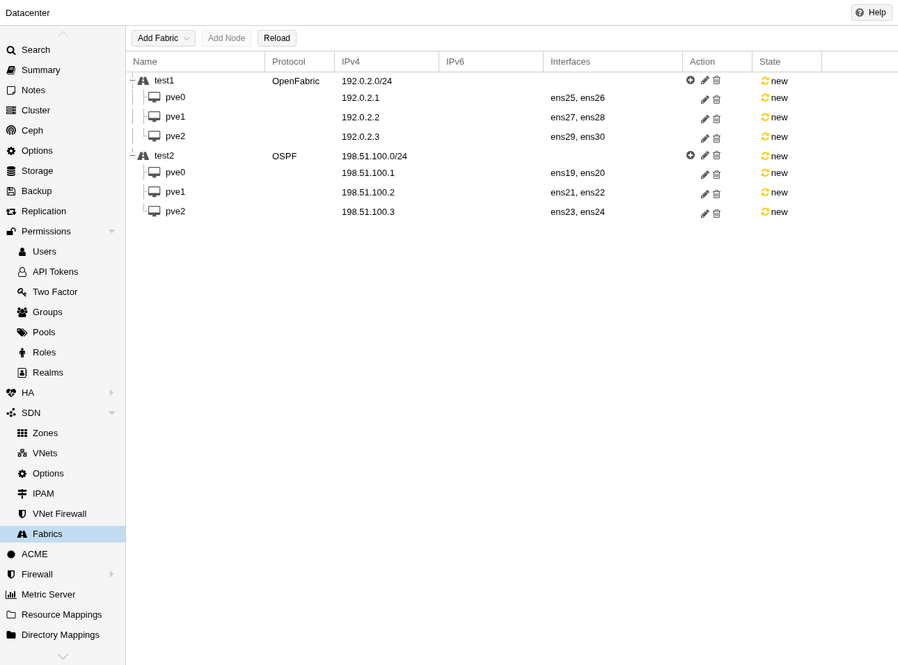
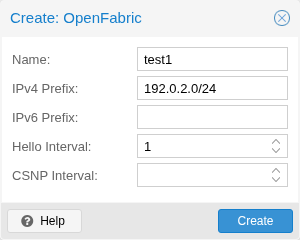
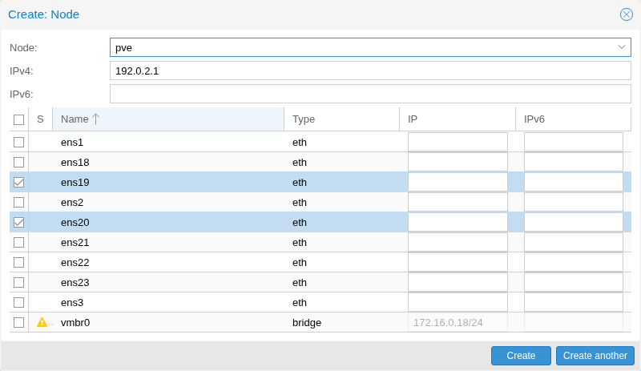
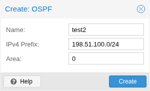
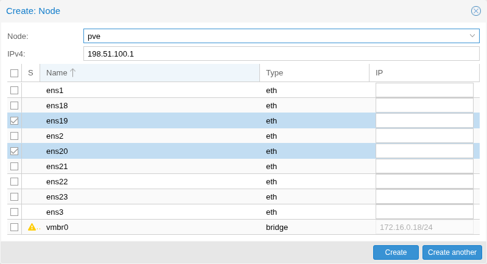

Fabrics in Proxmox VE SDN provide automated routing between nodes in a cluster. They simplify the configuration of underlay networks between nodes to form the foundation for SDN deployments.
They automatically configure routing protocols on your physical network interfaces to establish connectivity between nodes in the cluster. This creates a resilient, auto-configuring network fabric that adapts to changes in network topology. These fabrics can be used as a full-mesh network for Ceph or in the EVPN controller and VXLAN zone.
The FRR implementations of OpenFabric and OSPF are used, so first ensure that
the frr and frr-pythontools packages are installed:
apt update apt install frr frr-pythontools
To view the configuration of an SDN fabric users need SDN.Audit or SDN.Allocate permissions. To create or modify a fabric configuration, users need SDN.Allocate permissions. To view the configuration of a node, users need the Sys.Audit or Sys.Modify permissions. When adding or updating nodes within a fabric, additional Sys.Modify permission for the specific node is required, since this operation involves writing to the node’s /etc/network/interfaces file.
To create a Fabric, head over to Datacenter→SDN→Fabrics and click "Add Fabric". After selecting the preferred protocol, the fabric is created. With the "+" button you can select the nodes which you want to add to the fabric, you also have to select the interfaces used to communicate with the other nodes.
You can specify a CIDR network range (e.g., 192.0.2.0/24) as a loopback prefix for the fabric. When configured, the system will automatically verify that all router-IDs are contained within this prefix. This ensures consistency in your addressing scheme and helps prevent addressing conflicts or errors.
Each node in a fabric needs a unique router-ID, which is an IPv4 address in dotted decimal notation (e.g., 192.0.2.1). In OpenFabric this can also be an IPv6 address in the typical hexadecimal representation separated by colons (e.g., 2001:db8::1428:57ab). A dummy interface with the router-ID as address will automatically be created and will act as a loopback interface for the fabric (it’s also passive by default).
For every fabric, an access-list and a route-map are automatically created. These configure the router to rewrite the source address of outgoing packets. When you communicate with another node (for example, by pinging it), this ensures that traffic originates from the local dummy interface’s IP address rather than from the physical interface. This provides consistent routing behavior and proper source address selection throughout the fabric.
IPv6 is currently only usable on OpenFabric fabrics. These IPv6 Fabrics need global IPv6 forwarding enabled on all nodes contained in the fabric. Without IPv6 forwarding, non-full-mesh fabrics won’t work because the transit nodes don’t forward packets to the outer nodes. Currently there isn’t an easy way to enable IPv6 forwarding per-interface like with IPv4, so it has to be enabled globally. This can be accomplished by appending this line:
post-up sysctl -w net.ipv6.conf.all.forwarding=1
to a fabric interface in the /etc/network/interfaces file. This will enable
IPv6 forwarding globally once that interface comes up. Note that this affects
how your interfaces handle automatic IPv6 setup (SLAAC), Neighbour
Advertisements, Router Solicitations, and Router Advertisements. More details
here: https://www.kernel.org/doc/Documentation/networking/ip-sysctl.txt under
net.ipv6.conf.all.forwarding.
OpenFabric is a routing protocol specifically designed for data center fabrics. It’s based on IS-IS and optimized for the spine-leaf topology common in data centers.

Configuration options:
For IPv6 fabrics to work, global forwarding needs to be enabled on all nodes. Check Notes on IPv6 for how to do it and additional info.

Options that are available on every node that is part of a fabric:
When using IPv6 addresses, the last 3 segments are used to generate the NET. Ensure these segments differ between nodes.
The following optional parameters can be configured per interface when enabling the additional columns:
When you remove an interface with an entry in /etc/network/interfaces
that has manual set, then the IP will not get removed on applying the SDN
configuration.
OSPF (Open Shortest Path First) is a widely-used link-state routing protocol that efficiently calculates the shortest path for routing traffic through IP networks.

Configuration options:

Options that are available on every node that is part of a fabric:
The following optional parameter can be configured per interface:
When you remove an interface with an entry in /etc/network/interfaces
that has manual set, then the IP will not get removed on applying the SDN
configuration.
The dummy interface will automatically be configured as passive. Every
interface which doesn’t have an ip-address configured will be treated as a
point-to-point link.